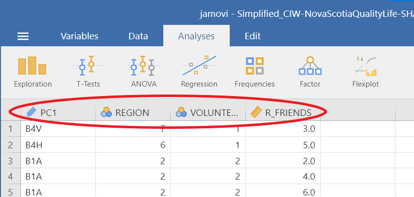
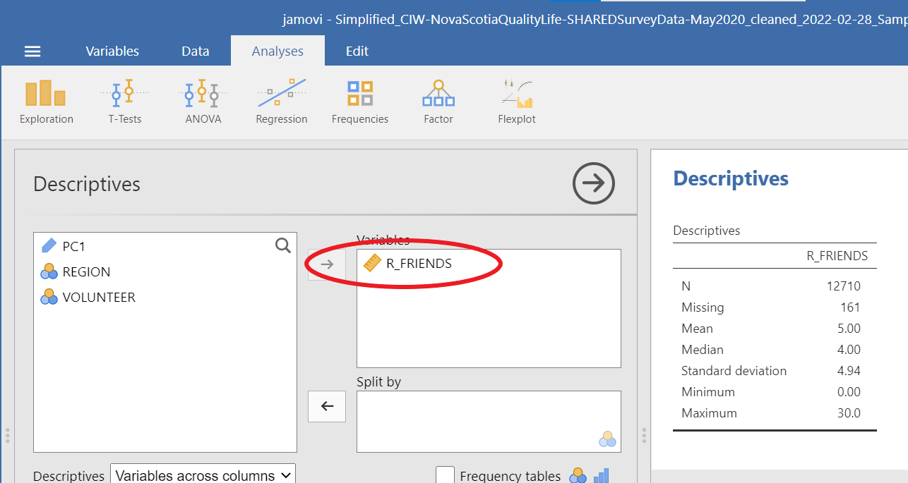
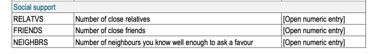
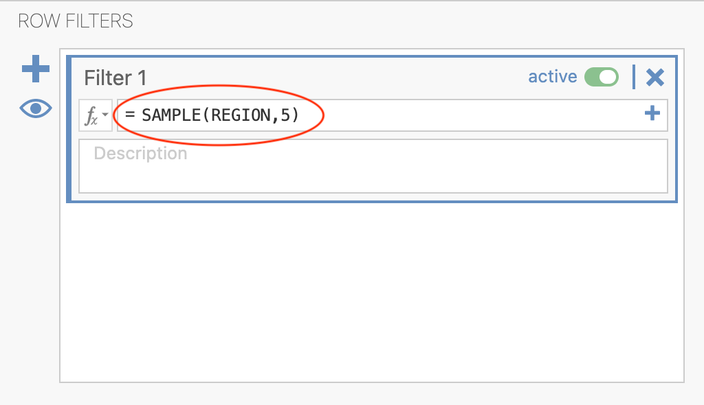
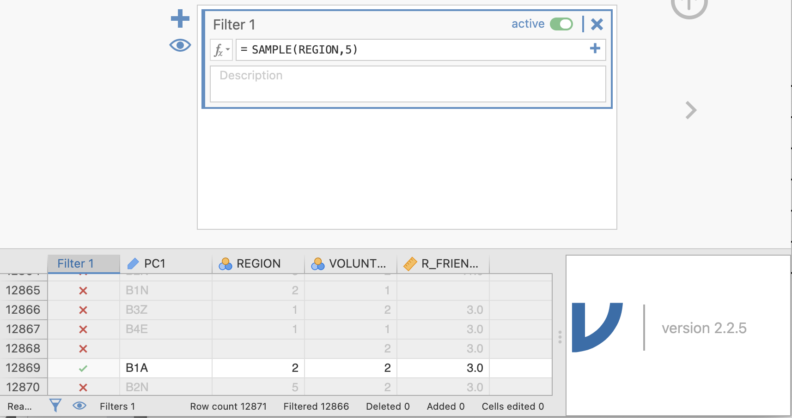
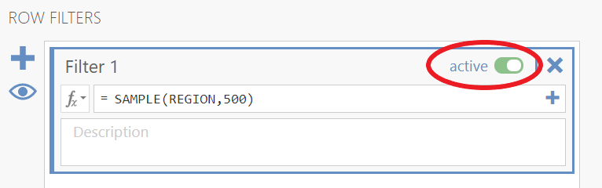
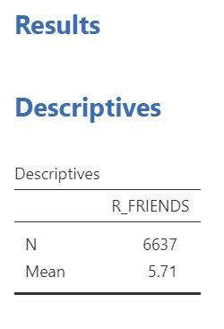

Chapter 3 Lab 3: Sampling and Sampling Distributions
3.1 R
How to do it in R
3.2 Excel
How to do it in Excel
3.3 SPSS
How to do it in SPSS
3.4 JAMOVI - Week 7 - March 8 & 9
This lab activity was developed by Erin Mazerolle and Sherry Neville-MacLean.
3.4.1 Learning Objectives
- Create sampling distributions from a âpopulationâ dataset.
- Interpret sampling distributions, especially with respect to sample size.
- Use the Filter function to randomly sample from a dataset.
- Use the Filter function to select specific cases from a dataset.
3.4.2 Pre-lab tasks
In order for our computers to run a bit faster, we use a version of the EngageNS Quality of Life data that only contains four variables for this activity. It can be downloaded from Moodle. Download this file to your computer before the beginning of your lab session. Have it open in JAMOVI at the beginning of your lab session.
In addition, have a new Excel spreadsheet open. You can use Excel on your computer or Office365.
3.4.3 The impact of sampling on research results
When we read about research, only one set of results are presented to us - the results from the sample obtained by the researchers. However, itâs important to realize that the particular results obtained are completely dependent on the sample. This means if they repeated the exact same data collection, but the sample included different participants, the results would be different. âHow different?â is an extremely important question. Through this lab activity, you will see that the answer depends quite a bit on sample size.
For the purpose of this lab activity, we are going to define all the data in the EngageNS dataset as the population (i.e., all 12871 rows). We are going to randomly sample from that population, using different sample sizes.
You should have four columns of data in the âSimplified_CIW-NovaScotiaQualityofLife-SHAREDSurveyData-May2020_cleaned_2022-02-28_SamplingLabActivity.omvâ dataset: PC1, REGION, VOLUNTEER, and R_FRIENDS.

First, we need to set up our analysis. As we have done in previous labs, click on Analyses, Exploration, and Descriptives. Move the R_FRIENDS variable into the âVariablesâ box or window.

Remember, you can use the data dictionary to learn what the variables are. R_FRIENDS is the revised (cleaned) FRIENDS variable. FRIENDS is described in the data dictionary as:

Ask yourself, what is the scale of measurement of R_FRIENDS? Is it recorded correctly in JAMOVI?
Back to the JAMOVI program, expand the âStatisticsâ section. For this activity, we are going to focus on the mean and the sample size, so deselect everything else. Your JAMOVI window should look something like this:

While the file has 12871 rows, your table will display an N of 12710. This is because there is no data in this column for some participants.
We are going to repeatedly randomly sample using different sample sizes and record the mean each time.
Click the Data tab, and then click Filters:

The following Row Filters panel will be displayed:

Filters allow us to select a subset (or sample) of the data. In this case, we are going to randomly select samples of different sizes. You can see that all the rows are selected by looking at the âFilter 1â column that has appeared as the leftmost column. The green checks indicate that those rows are included.
We will start with a sample size of 5 (N = 5). To create a sample from our population of 12871, we are going to use the SAMPLE function. This will tell JAMOVI to select 5 rows at random. Type SAMPLE(REGION,5) after the equals sign, as follows:

We use REGION in this filter as a placeholder. The filter also works if you use VOLUNTEER.
Now, most of the data are excluded, as indicated by the red Xs. If you scroll around, you should be able to find five rows with a green check. Your rows might look something like this:

You will also have a new Results table. Yours might have different numbers, but mine looks like this:

Not only might the value of the mean you see be different from the result above, but also the value of N recorded in your Descriptives table might not be exactly 5. This difference in N would be the result of your random sample including rows with missing data.
In your Excel spreadsheet, name a column âMeans for N = 5â and input your mean into the next row:

You can sample a new set of 5 rows by turning the filter on and off. Move the slider to change the filter from active:

to inactive:

When you move the slider back to âactive,â you should have a different sample in your results table. It will probably have a different mean from your previous sample.
Repeat this process 19 more times, to record the mean from 20 random samples.
Once you have 20 samples, input your means into the class spreadsheet.
Then, create a new column in your Excel spreadsheet, âMeans for N = 500â and repeat the process, but this time select random samples of 500. This means you need to adjust your filter so that it reads SAMPLE(REGION,500), and you have to continue to inactivate and activate the filter until you have 20 means with N = 500.


Once you have 20 samples with N = 500, input those into the class spreadsheet.
Once everyone has completed these tasks, we will make histograms of the means for both sample sizes as a group. While you are waiting, complete the lab activities described in the next sections.
3.4.4 Other types of filters
Perhaps you are interested in the number of friends reported by those who volunteer versus those who donât volunteer. You can use a filter in JAMOVI to get the mean number of friends for each group.
To find out the number of friends reported by those who volunteer, type VOLUNTEER==1 into the filter function:
The double equals sign (==) checks for equivalence. This is commonly used in programming language because a single equals sign (=) is used to assign or set a value to a given variable.

We see that the mean number of friends reported by participants who volunteer is 5.71:

3.4.5 Homework Problems
See Moodle.